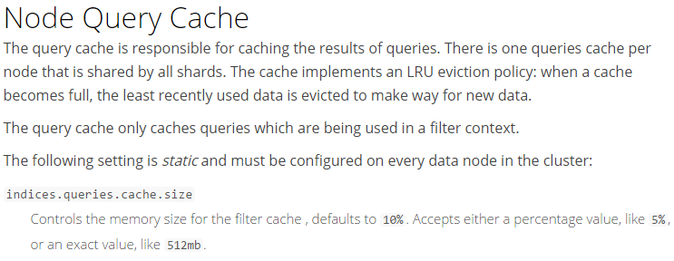

基本概念
在讲述ES Filter的执行流程和缓存原理之前，有几个概念我们必须要清楚。
Query and Filter context
Query Context
所谓查询上下文，是指包含一个或多个查询条件的逻辑组合，QueryContext里包含的的单个查询表示的含义是“文档和该查询条件的匹配度有多大”，针对QueryContext里的每一个查询都会计算出一个_score来表示匹配度，整个QueryContext的匹配度评分等于其包含所有单个查询评分的总和，所以针对一个Query我们更多关注的是匹配度。
Filter Context
过滤器上下文和查询上下文类似，都是由1个或多个子查询(Query clause) 组成的。他们的区别在于Filter不会计算文档得分，它代表的含义是“文档和该查询条件是否匹配”，所以针对一个Filter我们更多关注的是能否可以过滤掉文档，返回的结果只能是可以或者不可以（true or false）。
基本查询
在写基本查询前我们先创建一个索引（my_store）和一个类型（products）并插入4条product数据
1 | curl -XPUT http://localhost:9200/my_store |
要执行一个基于过滤器的查询必须要用bool query这样才能把过滤器嵌入到查询中，一个bool query的DLS基本格式是这样的
1 | { |
当存在Filter这一项时，其他3项（must，must_not，should）是可选的，如果不传将默认match_all。
在执行上面这个查询时，Filter会优先于其他项执行，其他的Query会在过滤器执行的结果集中再执行，这样可以在真正执行评分查询前过滤掉大部分数据，这也正是过滤器的主要功能。下面的例子是查询productID等于“XHDK-A-1293-#fJ3”的DLS
1 | { |
这个查询我们只指定Filter这一项，所以返回的结果就是filter过滤后的结果且未执行文档评分。
Filter执行流程
下面的截图是官网对Filter执行流程的描述：官网地址

这里先简单的翻译下，ES在执行非评分查询（这里的非评分查询我们以上面TermQuery查询为例）时会依次执行以下几个操作
查找匹配文档
TermQuery先在倒排索引中匹配到符合指定查询值的文档列表，这个case中是查询值是productID=XHDK-A-1293-#fJ3的文档也就是_id=1的文档。
创建一个bitset(位图)
Filter根据第1步的查询结果创建一个位图(一个只包含0和1的数组) ，用来表示文档是否被包含在这个TermQuery中，在我们的例子中这个bitset是[1,0,0,0] 它表示第1个文档匹配，第2、3.、4不匹配。在ES内部该位图采用“roaring bitmap”算法进行位图压缩，它能够高效的压缩稀疏和稠密集合。想深入了解的同学请自行google。
迭代生成的位图
在多个TermQuery同时存在一个FilterContext 中执行过滤查询时，会生成多个位图（一个Query clause对应一个BitSet），ES会迭代这些位图并从中找到符合条件的文档。当然ES会很智能的选择位图的执行顺序，通常情况下ES会选择稀疏的位图优先执行，这样的做的目的是过滤掉大部分不符合条件的文档。
叠加Bitset的执行次数
ES能缓存非评分查询并快速访问，但是它可能会很蠢的缓存一些不常使用的东东，在倒排索引中非评分查询已经相当快了，所以我们需要缓存那些“我们知道会在接下来的时间被多次访问的查询” 以免造成资源浪费。
为了这样做，ES跟踪记录了以每个索引为基础的历史访问记录，如果一个查询在最近的256个查询中被执行了若干次，那么它将会被缓存到内存中(一个非评分查询被缓存实际上是该查询的位图被缓存)，当位图被缓存时还有两个条件是要满足的：该查询对应的segments所持有的文档数必须大于1W 且必须大于总索引大小的3%，ES这样做是因为对于那些小的索引段会很快的被合并掉,对它们的缓存其实是一种浪费.
上面的流程可能看得不是很明白，下面我们举一个实际的例子来说明下，看下面这个查询。
1 | { |
这个查询中的Filter Context中包含2个Query clause，一个是term查询，一个是range查询。
- 第一步，根据term和range查询得到两个BitSet，这里应该是term -> [0,0,1,0]和range -> [0,1,1,1]
- 第二步，合并两个BitSet：[0,0,1,0] + [0,1,1,1] = [0,0,1,0]，合并到可以看出只有第3个文档符合条件，返回查询结果
- 第三步，分别缓存term和range查询生成的Bitset，以便其他查询包含这两个query clause的时候可以直接从缓存读取，以后每次命中缓存都会对对应的BiSet调用次数+1
Filter Cache（Query Cache）
这里的过滤器缓存其实指的就是我们所了解的查询缓存（非Query Request缓存）,下面是官网对Query Cache的描述：官网地址

上面描述的以及之前讨论过的的可以简单把Query Cache总结为以下几点
- Query Cache是节点级别的，每个节点上的所有分片共享一份缓存
- Query Cache采用LRU缓存失效策略
- Query Cache只能在Filter Context中被使用
- Query Cache可以通过 indices.queries.cache.size来设置缓存占用大小，默认10%，可手动设置比如512mb
- Query Cache实际缓存的是Bitset（位图），一个Query clause对应一个Bitset
- 缓存要生效，必须满足两个条件
- a）查询对应的segments所持有的文档数必须大于10000
- b）查询对应的segments所持有的文档数必须大于整个索引size的3%
- 当新索引文档时，Query Cache不会重新计算，而是判断索引的文档是否符合缓存对应的Query clause，满足则加入BitSet中